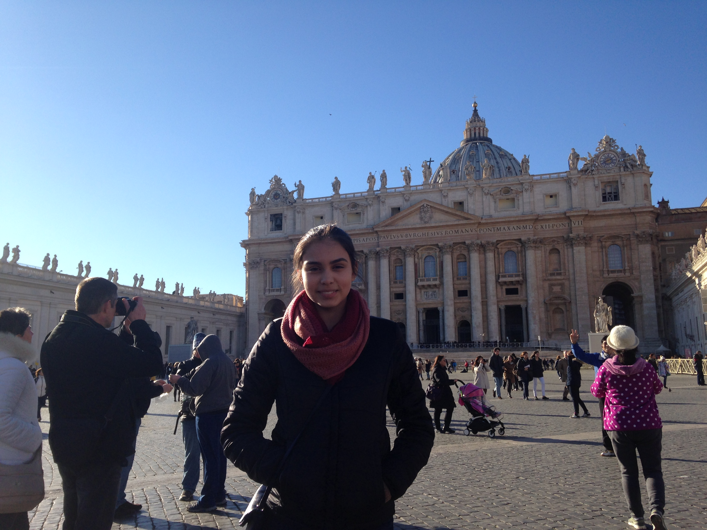

These are few images I took when my family and I visited Ireland back in 2012. We stayed in a villa near Limerick. While in Ireland, we saw a castles, visited small villages, and saw the the cliffs of Moher. One of the things I remember most about Ireland was how green was the landscape.

This past January, I went to Italy and visited Rome, Pompeii, Naples, and Venice. The food was amazing and I learned a lot about its history. The most memorable places I visited include the ruins of Pompeii, the Roman Colosseum, Trevi Fountain, and St. Paul's Cathedral.